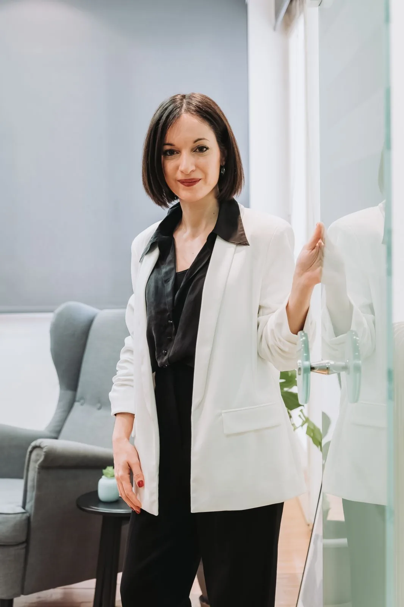
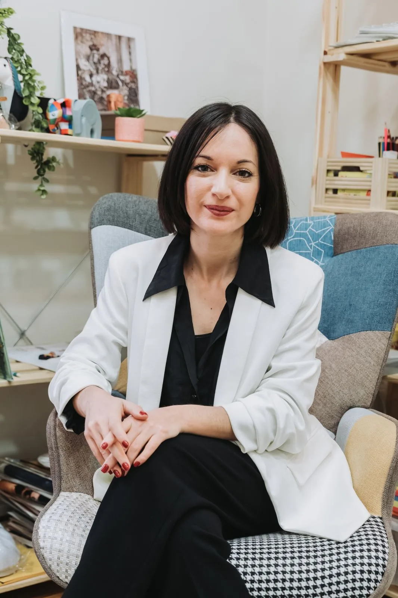
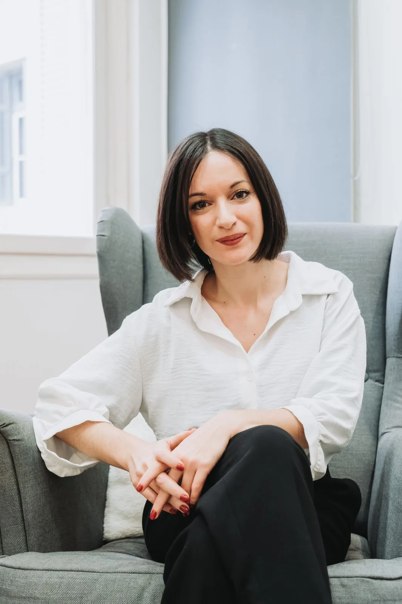
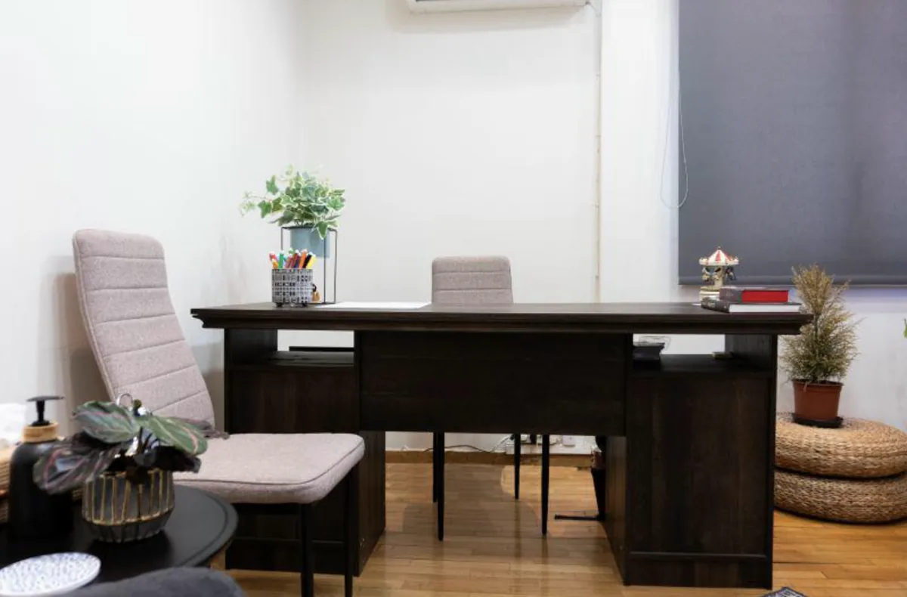
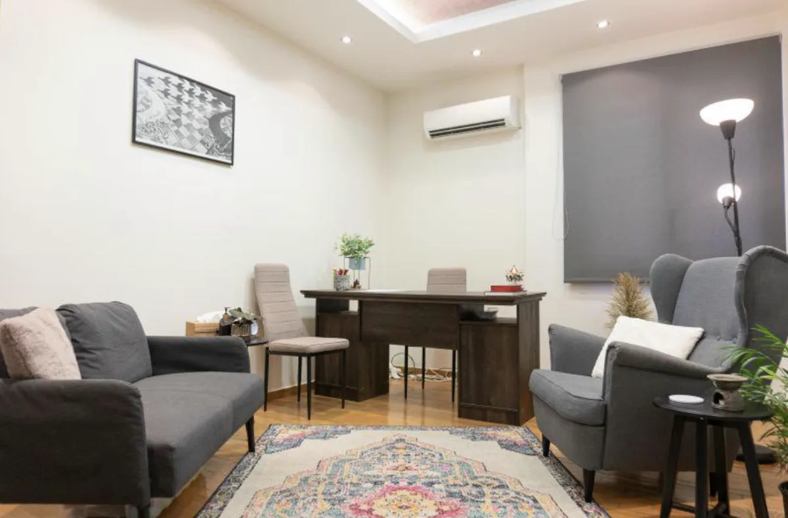
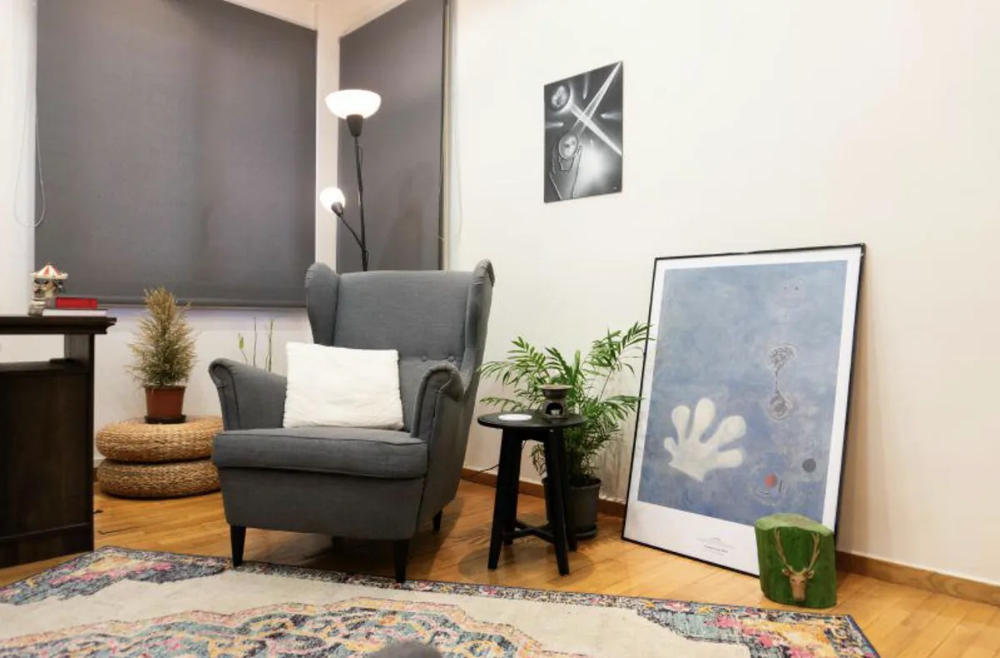
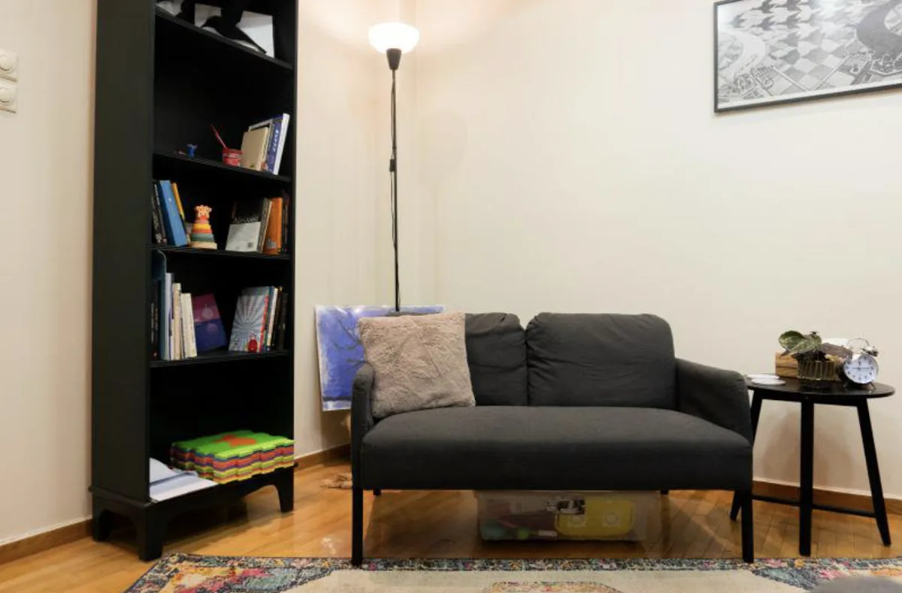

Η Μαρία Πολυκρέτη είναι Ψυχολόγος με άδεια ασκήσεως επαγγέλματος (Αρ. Αδείας: 3461) και διατηρεί το ιδιωτικό της γραφείο στο κέντρο της Αθήνας. Διαθέτει μακρόχρονη ακαδημαϊκή και επαγγελματική κατάρτιση, ούσα απόφοιτη του τμήματος Ψυχολογίας του Παντείου Πανεπιστημίου και κάτοχος του εξειδικευμένου Μεταπτυχιακού Τίτλου (MSc) «Εφαρμοσμένη Ψυχολογία Παιδιού και Εφήβου» από το Εθνικό και Καποδιστριακό Πανεπιστήμιο Αθηνών (Ε.Κ.Π.Α.).
Η επαγγελματική της πορεία διακρίνεται από πολυετή και πολύπλευρη κλινική εμπειρία σε Δομές και Οργανισμούς Ψυχικής Υγείας, προτού μεταβεί στην ιδιωτική πρακτική. Σήμερα, υποστηρίζει θεραπευτικά παιδιά, εφήβους και ενήλικες, ενώ παράλληλα παρέχει υπηρεσίες Συμβουλευτικής Γονέων.
Διαθέτει πολυετή εμπειρία στην διερεύνηση και αξιολόγηση ειδικών μαθησιακών δυσκολιών σε σχολικά πλαίσια, ενώ εξειδικεύεται στην χορήγηση και εποπτεία του ψυχομετρικού τεστ νοημοσύνης WISC VGR. Στην κλινική της πρακτική, αντλεί αρχές από την Αφηγηματική Θεραπεία, την θεραπεία τραύματος και την συστημική κατανόηση του συμπτώματος, παρέχοντας ένα πλαίσιο εξωτερίκευσης του προβλήματος και ενδυνάμωσης της αναδιήγησης της προσωπικής ιστορίας του ατόμου.
Εγκαθίδρυση ασφαλούς σχέσης με το παιδί ή τ@ έφηβ@ για την ενίσχυση της ψυχοσυναισθηματικής του ανάπτυξης. Αντιμετώπιση δυσκολιών προσαρμογής, σχολικού άγχους, ζητημάτων κοινωνικοποίησης και συναισθηματικής αυτορρύθμισης.
Το WISC VGR είναι ένα από τα πιο αξιόπιστα εργαλεία αξιολόγησης γνωστικών ικανοτήτων. Η αξιολόγηση προσφέρει έναν αναλυτικό χάρτη του γνωστικού προφίλ του παιδιού και τ@ εφήβ@.
Εξειδικευμένη υποστήριξη και καθοδήγηση σε γονείς για την αποτελεσματική διαχείριση κρίσεων, την οριοθέτηση συμπεριφορών και την ενίσχυση της επικοινωνίας. Δουλεύουμε συνεργατικά για να χτίσουμε ένα υποστηρικτικό οικογενειακό περιβάλλον.
Διαχείριση άγχους, φοβιών και τραυματικών εμπειριών.
Ατομική Εποπτεία σε νέους συναδέλφους που αναζητούν επιστημονική καθοδήγηση στην χορήγηση και ερμηνεία του ψυχομετρικού εργαλείου WISC VGR.
Οι βασικές σπουδές μου στην Ψυχολογία και η μεταπτυχιακή εξειδίκευση στην Εφαρμοσμένη Ψυχολογία παιδιού και εφήβου αποτελούν την κύρια ακαδημαϊκή κατάρτιση που ενημερώνει την κλινική πρακτική. Ενώ η ενασχόληση με την στάθμιση ψυχομετρικών και μαθησιακών εργαλείων εμπλουτίζει την σφαιρική και επιστημονική κατανόηση αδυναμιών που συναντά το παιδί και τ@ έφηβ@ στην σχολική και αναπτυξιακή του πορεία.
Η ατομική ψυχοθεραπεία ενός ενήλικα αποτελεί ένα προσωπικό βήμα προς την αναγνώριση και αποδοχή πτυχών του εαυτού που δεν έχουν ακουστεί. Πρόκειται για μια μη κατευθυντική προσέγγιση που αποσκοπεί στην ενδυνάμωση της προσωπικής φωνής του ατόμου μέσα στα πλαίσια όπου αναδύεται το σύμπτωμα και την κατανόηση της ιστορίας του στο σχετίζεσθαι.
Η κλινική μου διαδρομή σε Δομές και Οργανισμούς Ψυχικής Υγείας, μαζί με τη διδακτική μου ενασχόληση με τη χορήγηση και την ερμηνεία του ψυχομετρικού τεστ νοημοσύνης WISC VGR, στηρίζει τη σημερινή μου κλινική πρακτική.

Ψυχολόγος, MSc · Αρ. Αδείας 3461 · Ιδιωτικό γραφείο: Στουρνάρη 28, Πολυτεχνείο, Αθήνα
Ένα περιβάλλον σχεδιασμένο με γνώμονα την ηρεμία, τη δημιουργικότητα και την εμπιστοσύνη.



